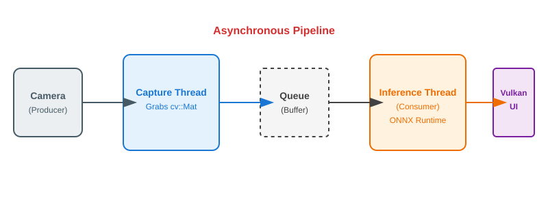

Real-Time Camera Integration
So far, we’ve been treating ML like a slow, deliberate process: load an image from disk, wait for the GPU to chew on it, and eventually show a result. This works for a "Photo Booth" app, but if you’re building an augmented reality game or a real-time robot controller, "eventually" isn’t good enough.
In this chapter, we’re going to bridge the gap between static inference and live video. We want to process a webcam stream at 30+ frames per second (FPS) without our UI feeling like it’s wading through molasses.
This isn’t just about making the inference faster; it’s about orchestration. We need to coordinate three different worlds: 1. The Camera: Which produces frames at its own pace (e.g., exactly every 33.3ms for 30 FPS). 2. The Inference Engine: Which takes a significant chunk of time to process a single frame (e.g., 40ms to 80ms). 3. The Renderer: Which needs to keep drawing at 60 FPS (every 16.6ms) to keep the UI smooth and responsive.
The "Stop-and-Go" Problem
If you take a naive approach, your code might look like this: * Capture a frame. * Wait for inference to finish. * Render the result. * Repeat.
The problem? While the GPU is doing inference, your CPU is sitting idle. While the camera is waiting for the next request, the GPU is idle. If inference takes 30ms and rendering takes 5ms, you’re at 28 FPS—and that’s assuming nothing else is happening. Worse, your UI will feel "jittery" because the main thread is blocked waiting for the GPU.
To fix this, we need to think in terms of pipelines and concurrency. We want to be rendering Frame N, while performing inference on Frame N-1, and capturing Frame N+2 from the camera—all at the same time.

Understanding Latency vs. Throughput
In real-time graphics, we care about two metrics: 1. Throughput (FPS): How many frames we process per second. Higher is better for "smoothness." 2. Latency (Lag): How long it takes from a physical movement in front of the camera to that movement appearing on screen with a label. Lower is better for "responsiveness."
By using a pipeline, we maximize Throughput (reaching 30-60 FPS), but we slightly increase Latency (the label on screen might be 2 or 3 frames "behind" reality). For classification, this is a perfect tradeoff.
Step 1: Grabbing Frames with OpenCV
Before we can process video, we need to get it into our application. While we could use platform-specific APIs (like MediaFoundation on Windows or V4L2 on Linux), we’ll use OpenCV. It’s the industry standard for a reason: it’s cross-platform and handles the messy details of camera drivers for us.
#include <opencv2/opencv.hpp>
class Camera {
public:
Camera(int id = 0) {
cap.open(id);
if(!cap.isOpened()) throw std::runtime_error("Camera not found!");
// Let's request a standard HD stream
cap.set(cv::CAP_PROP_FRAME_WIDTH, 1280);
cap.set(cv::CAP_PROP_FRAME_HEIGHT, 720);
}
bool nextFrame(cv::Mat& frame) {
return cap.read(frame);
}
private:
cv::VideoCapture cap;
};Designing a Responsive Pipeline
To keep the UI smooth, we’ll use a Producer-Consumer pattern. * The Producer: A dedicated thread that just sits and talks to the camera. As soon as a frame is ready, it pushes it into a queue. * The Consumer: Another thread that pulls frames from that queue and runs the ML model.
This way, if a frame takes a little longer than usual to process, it doesn’t block the camera from capturing the next one, and it certainly doesn’t stop our Vulkan renderer from drawing the UI.
class MLPipeline {
public:
void start() {
// Separate threads for capture and inference to keep the UI at 60 FPS
captureThread_ = std::thread(&MLPipeline::captureLoop, this);
inferenceThread_ = std::thread(&MLPipeline::inferenceLoop, this);
}
private:
void captureLoop() {
while (running_) {
auto frame = camera_.grabFrame();
// Push to queue, dropping old frames if we're falling behind
// This ensures we always process the freshest data
std::lock_guard<std::mutex> lock(queueMutex_);
if (inferenceQueue_.size() < MAX_QUEUE_SIZE) {
inferenceQueue_.push(frame);
queueCV_.notify_one();
}
}
}
void inferenceLoop() {
while (running_) {
// Wait for a new frame from the capture thread
auto frame = waitForFrame();
// Perform the heavy lifting (Vulkan/ONNX inference)
auto results = classifier_.classifyMat(frame);
// Update the UI with the latest results
updateLatestResult(results);
}
}
};This architecture:
-
Capture thread: Grabs frames from camera as fast as possible, pushes to queue
-
Inference thread: Pops frames, runs preprocessing + inference, publishes results
-
Render thread (main): Reads latest results without blocking, renders UI
Frames are dropped if inference can’t keep up—better than building up latency.
GPU-Accelerated Preprocessing
Preprocessing (resize, normalize, transpose) is expensive on CPU. As we saw in the CPU implementation, these steps can take 30ms or more. Moving this to a Vulkan Compute shader reduces this to less than 2ms.
Bilinear Resizing in a Shader
Instead of writing complex interpolation loops, we leverage the GPU’s built-in Texture Sampling hardware. When you sample from a texture using normalized coordinates (u, v), the GPU hardware performs bilinear interpolation for free!
// Inside the Preprocessing Shader
// Sample from input texture (hardware bilinear filtering handles resize)
vec2 uv = (vec2(outPos) + 0.5) / vec2(params.outputWidth, params.outputHeight);
vec3 rgb = texture(inputImage, uv).rgb;Mathematical Normalization
We apply the same ImageNet normalization formula as before, but now we do it in parallel for every pixel simultaneously.
The NCHW Transpose in Parallel
The trickiest part of the shader is writing the data in Planar (NCHW) order. We calculate the output index by treating the buffer as three separate "sheets" (planes) of memory.
// Write in NCHW order (separate channels)
uint pixelIdx = outPos.y * params.outputWidth + outPos.x;
uint planeSize = params.outputWidth * params.outputHeight;
// Plane 0: All Red values
output.data[0 * planeSize + pixelIdx] = normalized.r;
// Plane 1: All Green values
output.data[1 * planeSize + pixelIdx] = normalized.g;
// Plane 2: All Blue values
output.data[2 * planeSize + pixelIdx] = normalized.b;By using gl_GlobalInvocationID.xy, we launch a "thread" for every pixel in the 224×224 output. Each thread performs its own sample, normalize, and three writes. This is why GPUs are so much faster than CPUs for this task.
Preprocessing Shader Code
#version 450
// Preprocessing shader: resize + normalize + HWC→NCHW transpose
layout(local_size_x = 16, local_size_y = 16) in;
layout(set = 0, binding = 0) uniform sampler2D inputImage; // Camera frame
layout(set = 0, binding = 1) writeonly buffer OutputBuffer {
float data[];
} output;
layout(push_constant) uniform Params {
vec3 mean; // ImageNet mean: [0.485, 0.456, 0.406]
vec3 stddev; // ImageNet std: [0.229, 0.224, 0.225]
uint outputWidth; // 224
uint outputHeight; // 224
} params;
void main() {
ivec2 outPos = ivec2(gl_GlobalInvocationID.xy);
if (outPos.x >= params.outputWidth || outPos.y >= params.outputHeight) {
return;
}
// Hardware-accelerated sample
vec2 uv = (vec2(outPos) + 0.5) / vec2(params.outputWidth, params.outputHeight);
vec3 rgb = texture(inputImage, uv).rgb;
// Normalization
vec3 normalized = (rgb - params.mean) / params.stddev;
// Planar Transpose
uint pixelIdx = outPos.y * params.outputWidth + outPos.x;
uint planeSize = params.outputWidth * params.outputHeight;
output.data[0 * planeSize + pixelIdx] = normalized.r;
output.data[1 * planeSize + pixelIdx] = normalized.g;
output.data[2 * planeSize + pixelIdx] = normalized.b;
}Upload camera frame as Vulkan image, dispatch compute shader, read result buffer for inference.
Async Compute: The Secret to High Performance
In a real-world Vulkan application, we don’t want to call device.waitIdle() after every preprocessing step. That’s like stopping your car every time you change gears. Instead, we use Async Compute and Timeline Semaphores to create a non-blocking "Handshake" between the Preprocessor and the Inference Engine.
The Timeline Semaphore Handshake
A Timeline Semaphore is a counter that lives on the GPU. We can tell the GPU: "When you finish the Preprocessing job, increment this counter to 5." Then, our background C++ thread can wait specifically for the counter to reach 5 before reading the data.
// 1. Submit GPU preprocessing
uint64_t waitValue = lastProcessedFrameValue;
uint64_t signalValue = waitValue + 1;
vk::TimelineSemaphoreSubmitInfo timelineInfo;
timelineInfo.setWaitSemaphoreValues(waitValue);
timelineInfo.setSignalSemaphoreValues(signalValue);
// Preprocessing is submitted to the COMPUTE queue
computeQueue.submit(submitInfo);
// 2. Inference thread waits for the GPU counter to reach signalValue
vk::SemaphoreWaitInfo waitInfo;
waitInfo.setSemaphores(*timelineSemaphore);
waitInfo.setValues(signalValue);
// This blocks the BACKGROUND thread, not the UI!
device.waitSemaphores(waitInfo, UINT64_MAX);
// 3. GPU data is ready! Now run ONNX inference.
runInference(preprocessedBuffer);This architecture allows the GPU to be busy with rendering the Main UI on the Graphics Queue while simultaneously performing preprocessing on the Compute Queue. They only sync when they absolutely have to.
Rendering the Results: Keeping the UI Responsive
The main thread (the UI) should never wait for the Inference thread. If inference takes 100ms, the UI should keep rendering at 60 FPS, simply showing the "last known good" results.
Non-Blocking Result Fetching
We use an std::atomic or a std::mutex to protect the latest result. The UI thread "peeks" at the result every frame.
void renderFrame() {
// 1. Peek at the latest result (Thread-safe)
ClassificationResult latest;
{
std::lock_guard<std::mutex> lock(resultMutex);
latest = sharedLatestResult;
}
// 2. Always render the live camera feed
renderCameraTexture();
// 3. Overlay results if they are fresh
if (latest.confidence > 0.5f) {
drawBoundingBox(latest.rect);
drawTextOverlay(latest.label, latest.confidence);
}
}By decoupling the "Thinking" (Inference) from the "Seeing" (Capture) and "Showing" (Render), we create an application that feels professional and responsive, even when running heavy machine learning models.
Measuring Real-World Performance
When tuning a real-time ML app, you need to track three distinct numbers:
-
Capture FPS: Limited by your webcam (usually 30 or 60).
-
Inference FPS: How many "thoughts" the AI has per second.
-
Render FPS: How many times the screen redraws (target 60+).
The "Lag" Metric: You should also measure the time from camera.read() to UI.render(). This is your End-to-End Latency. In a well-optimized Vulkan pipeline with MobileNetV2, this should be between 60ms and 120ms.
Summary
Real-time camera classification requires a multi-stage orchestration strategy:
-
Threaded Pipeline: Capture, Inference, and Rendering must live in separate threads to prevent one from stalling the others.
-
Producer-Consumer: A queue-based system ensures the camera always has a place to put frames and the AI always has work to do.
-
GPU Preprocessing: Using Vulkan compute shaders and texture sampling hardware to handle resizing and normalization in parallel.
-
Timeline Semaphores: A high-performance handshake mechanism to sync GPU compute with CPU inference without blocking the UI.
-
Non-Blocking UI: Decoupling the render loop so the application stays interactive even when the AI is working hard.
You now have a responsive real-time ML application—a bridge between the world of graphics and the world of artificial intelligence.